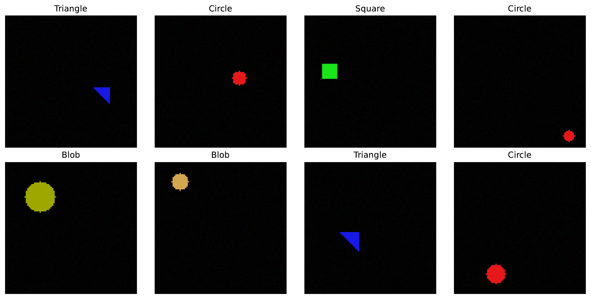
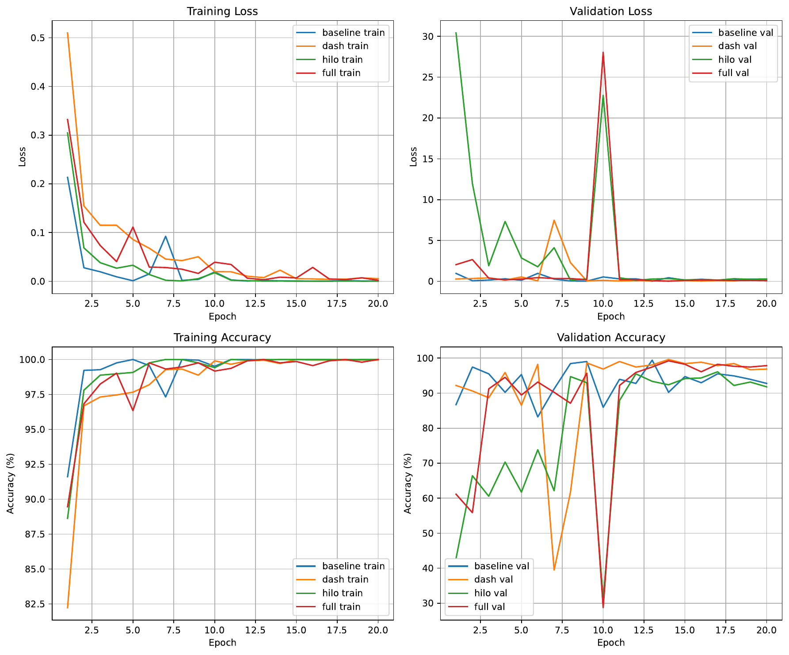
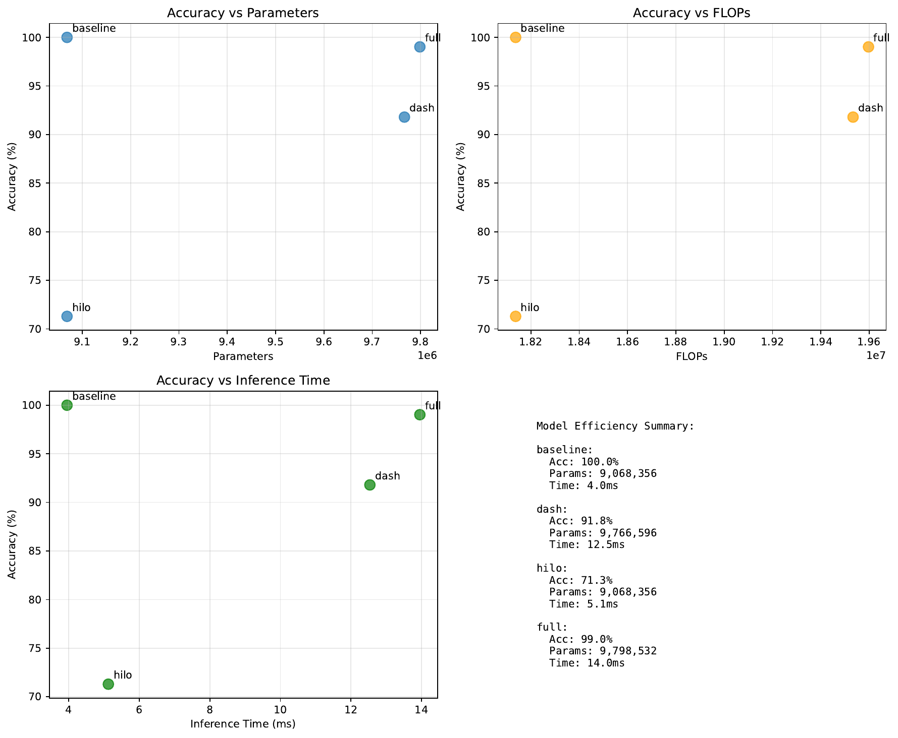
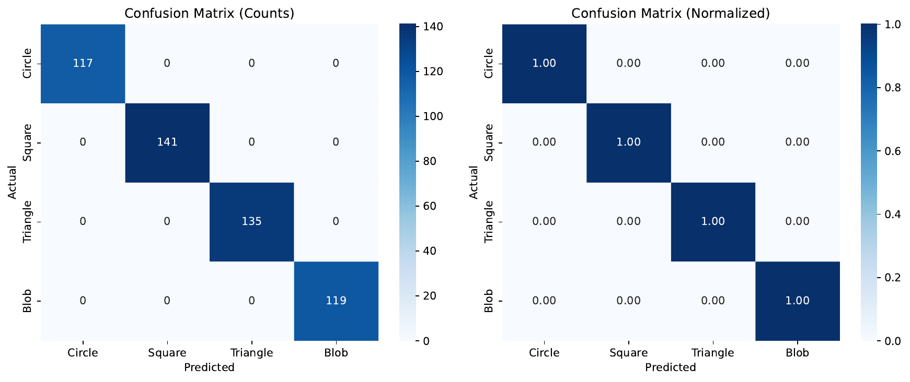
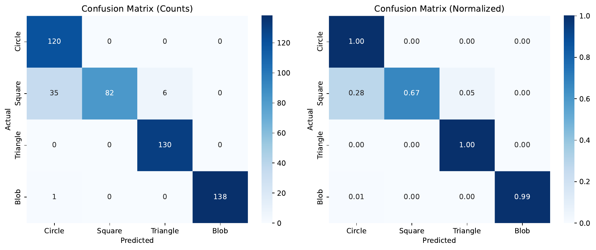
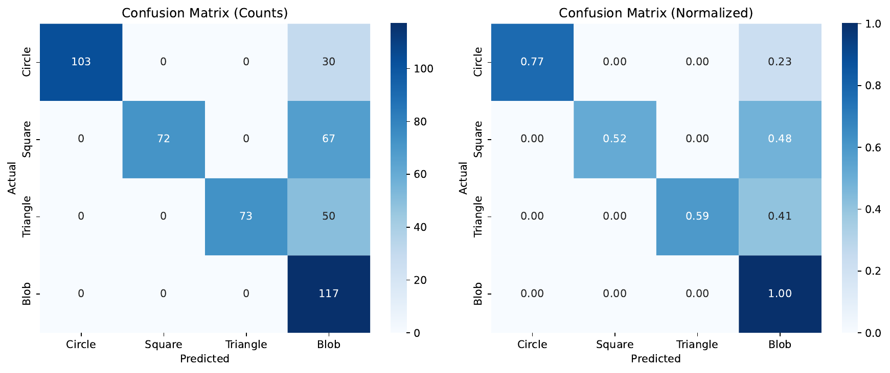
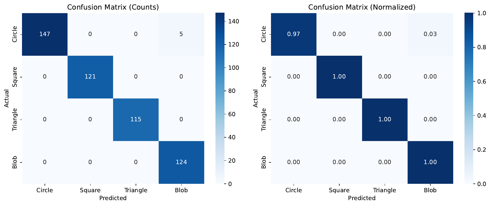
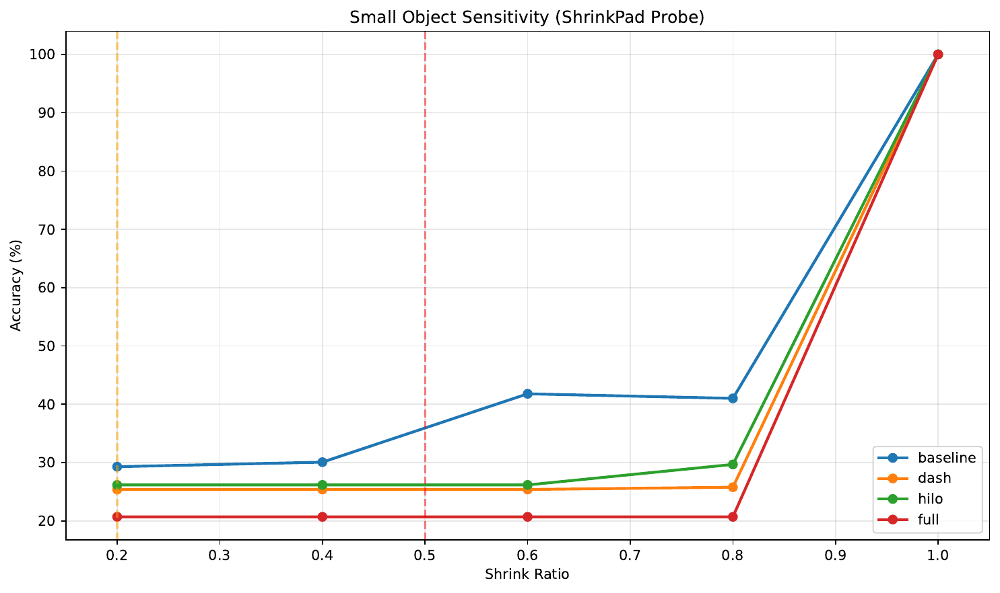

We target efficient Single-Head Vision Transformers (SHViT) under deployment requirements that are often neglected by accelerators: static tensor shapes at block boundaries, batch-normalization and convolution fusion, and predictable latency. Existing token-merging/pruning and frequency-aware designs typically alter the global sequence, assume multi-head splits, or introduce dynamic control flow, complicating ONNX/CoreML export and violating SHViT’s single-head premise [bolya_2022_token, wei_2023_joint, wang_2023_zero, pan_2022_fast, yun_2024_shvit]. We propose DASH-HiLo-Anchor, a set of pluggable, static-shape modules confined to the single-head self-attention (SHSA) path: (A) Dual-Axis Static co-budgeting (DASH) learns per-stage TopK channel indices and performs SHSA-internal token merging to a fixed N′; (B) HiLo-SHSA splits attended channels into masked local high-frequency and pooled global low-frequency paths; and (C) a single late cross-attention to sparse high-resolution anchors to recover small-object cues. We train with a two-phase regime that learns and then freezes indices and budgets, with coverage/diversity regularization, index-dropout, optional distillation, and per-mode BN recalibration (Hugo Touvron, 2020). All exported modes have constant graphs for ONNX/CoreML. In a compact synthetic verification harness, DASH-HiLo-Anchor does not shift the Pareto: parameters, FLOPs, and latency increase and small-object probes do not improve. We diagnose the causes—task saturation, incomplete SHSA-local reductions, and added overhead—and provide implementation guidance for ImageNet-scale evaluations that preserve SHViT’s static-shape strengths (Seokju Yun, 2024).
Edge deployment rewards architectures that are predictable and exportable. SHViT demonstrates that a memory-efficient macro and single-head self-attention (SHSA) can deliver strong speed–accuracy tradeoffs with simple deployment (Seokju Yun, 2024). Yet, three bottlenecks constrain its efficiency–accuracy Pareto: (i) fixed prefix-based partial-channel usage that ignores per-stage/channel utility; (ii) quadratic token costs in SHSA even when only a channel slice is attended; and (iii) a stride-16 macro that can harm small-object and fine-detail sensitivity.
Many efficiency techniques excel in unconstrained settings. Token Merging reduces sequence length via similarity-based merging without training (Daniel Bolya, 2022); Token Pruning and Squeezing learns to prune and squeeze pruned information (Siyuan Wei, 2023); Zero-TPrune provides zero-shot pruning from attention graphs (Hongjie Wang, 2023). Frequency-aware attention (HiLo) separates high- and low-frequency content across head groups to balance locality and global context (Zizheng Pan, 2022). However, these approaches often alter global token length across blocks, assume multi-head splits and additional normalization, or introduce dynamic control flow—choices that undermine SHViT’s static-shape, single-head, BN/Conv-fusion-friendly deployment and complicate ONNX/CoreML export (Seokju Yun, 2024).
We ask: can we move the SHViT Pareto while preserving what makes it deployable—single-head simplicity, static shapes at block interfaces, and predictable latency across backends? Our answer is DASH-HiLo-Anchor, a micro-architectural upgrade that keeps all block I/O at [B,C,H,W] and confines all changes to the SHSA forward path plus one late fusion site. The method co-budgets channels and tokens inside SHSA with learned indices that are frozen at export, enriches locality vs. global context with a single-head HiLo split, and recovers detail with a sparse high-resolution anchor fusion, all while producing 2–3 fixed-budget artifacts per checkpoint with constant shapes.
Future work will execute ImageNet-1k evaluations with ablations (channels, token merge, HiLo, anchors), small-object probes, and backend parity analyses under static-shape constraints, comparing to token merging/pruning and frequency-aware baselines while preserving SHViT’s single-head deployment advantages [bolya_2022_token, pan_2022_fast, wei_2023_joint, wang_2023_zero, chen_2021_chasing, yun_2024_shvit].
Efficient token operations. Token-level accelerators reduce the quadratic self-attention cost by shortening sequences. Token Merging (ToMe) greedily merges similar tokens at inference, often doubling throughput with minor accuracy loss (Daniel Bolya, 2022). Token Pruning and Squeezing (TPS) prunes inattentive tokens and squeezes their information into reserved tokens, mitigating pruning-induced loss (Siyuan Wei, 2023). Zero-TPrune performs zero-shot token pruning by leveraging attention graphs, enabling configurable budgets without fine-tuning (Hongjie Wang, 2023). These methods typically change the global sequence length across blocks and depend on dynamic per-input decisions. In SHViT’s static-shape setting, such variability complicates ONNX/CoreML export and produces input-dependent latency, motivating our confinement of token reduction to a fixed-length, internal SHSA path with scatter-back to preserve [B,C,H,W].
Single-head and static-shape design. SHViT demonstrates that single-head attention combined with a memory-efficient macro achieves competitive speed–accuracy tradeoffs and is well-suited to deployment (Seokju Yun, 2024). We explicitly preserve SHViT’s interfaces: no extra heads, no global sequence changes at block boundaries, and no control-flow nodes. This contrasts with works that assume multi-head splits or add layer-normalization-heavy reworks, which can hinder BN/Conv fusion and complicate export.
Frequency-aware attention. HiLo (from LITv2) disentangles high- and low-frequency patterns by assigning head groups to local and global attention, respectively, yielding strong speed improvements on CPUs and GPUs (Zizheng Pan, 2022). We adopt the HiLo intuition but implement it inside a single-head, partial-channel SHSA branch: masked local attention for a high-frequency channel slice and pooled global attention for a low-frequency slice, reusing the same qkv/projection to preserve shapes and avoid extra norms.
Sparsity and co-training. SViTE integrates sparsity end-to-end, dynamically extracting and training sparse subnetworks and reporting gains in both training memory and inference cost (Tianlong Chen, 2021). Our approach is related in spirit but differs in inference-time behavior: we avoid dynamic sparsity at run time. Channel indices are learned once via straight-through Gumbel-TopK and then frozen; token-merge maps are fixed per exported mode. This produces constant graphs and predictable latency.
Mobile-oriented ViTs. EfficientFormer and EfficientFormerV2 show that latency-driven design and fine-grained search can bring ViTs to MobileNet-like speed and size [li_2022_efficientformer, li_2022_rethinking]. LeViT and FastViT achieve favorable latency–accuracy tradeoffs through hybrid ConvNet–Transformer designs and reparameterization [graham_2021_levit, vasu_2023_fastvit]. These advances are complementary: our objective is to accelerate a given SHViT micro-design under static-shape constraints, rather than to redesign the macro architecture or adopt hybrid blocks.
Comparison and applicability. In settings where dynamic sequence lengths and control flow are acceptable, ToMe and TPS are compelling [bolya_2022_token, wei_2023_joint]. Our problem setting forbids variable-length block interfaces, head proliferation, and input-dependent control flow. DASH-HiLo-Anchor targets this niche by confining reductions to an internal path, restoring shapes before exiting the block, freezing indices per mode, and exporting multiple fixed-budget artifacts from a single checkpoint (Seokju Yun, 2024).
Problem setting. We consider hierarchical SHViT backbones with four stages and single-head self-attention (SHSA) in later stages; early stages may use convolutions, as in SHViT (Seokju Yun, 2024). At every block boundary, the tensor shape is [B,C,H,W]. Our deployment requirements are: single-head simplicity, static shapes at all interfaces to preserve BN/Conv fusion opportunities, predictable latency, and exportability to ONNX/CoreML without control-flow nodes.
Design constraints. Efficiency mechanisms must not: (i) alter the global sequence length across blocks; (ii) add attention heads; or (iii) introduce per-input control flow. Co-budgeting must occur entirely inside SHSA and use static gather/scatter along channels and tokens. After processing, features are scattered back to the spatial grid so outputs remain [B,C,H,W]. Channel and token indices must be frozen per exported mode to ensure constant graphs. Multiple budget modes (fast, balanced, max-accuracy) should be produced from a single checkpoint.
Notation. Let x ∈ R^{B×C×H×W} be the SHSA input. The attention branch operates on pdim channels selected from an overprovisioned effective width pdim_eff (pdim_eff ≥ pdim). Queries, keys, and values are computed only from the selected channels; bypass channels are concatenated back before the existing projection. Let N = H×W be the number of tokens. Inside the branch, the attention operates at a reduced length N′ = (1 − r_merge)×N, where r_merge ∈ [0,1) is fixed per exported mode. For frequency-aware splitting, α denotes the fraction of attended channels routed to the high-frequency path; 1−α to the low-frequency path.
Foundational components. Channel selection uses a 1×1 scorer with global average pooling and straight-through Gumbel-TopK during training; indices are frozen after warmup and stored as buffers. Token merging is inspired by ToMe and TPS but is strictly confined to the partial-channel SHSA path and restores the original grid length before leaving the block [bolya_2022_token, wei_2023_joint]. Frequency-aware splitting follows the HiLo intuition but avoids multi-head splits and new norms (Zizheng Pan, 2022). The approach is orthogonal to pretraining and distillation and to macro-level redesigns [touvron_2020_training, li_2022_efficientformer, li_2022_rethinking, graham_2021_levit, vasu_2023_fastvit].
Assumptions and unusual aspects. We assume per-stage TopK channel indices are learnable and, once frozen, stable across inputs and dataset shifts; token-merge maps are constant per exported mode and backend (similarity-based for servers, deterministic Morton pairing for mobile). A single late HR-anchor fusion suffices to recover fine detail without multi-branch pyramids or shape changes. These choices prioritize deployment feasibility under static-graph constraints rather than maximizing dynamic adaptivity at inference time.
Overview. DASH-HiLo-Anchor modifies only SHSA.forward and adds one late fusion site. The model remains single-head, and all block interfaces remain [B,C,H,W]. We export two or three fixed-budget modes per checkpoint—fast, balanced, and max-accuracy—by freezing indices and budgets.
# Pseudocode: two-phase training and export
# Phase 1: learn and freeze indices/budgets
for epoch in phase1_epochs:
modes = sample_two_modes([fast, balanced, max_acc])
for x, y in loader:
# Channel scoring and ST Gumbel-TopK selection
idx = select_channels(scores(x), k=pdim)
# SHSA-internal token merge to N'
qkv = qkv_from(x.gather(idx))
tokens = merge_tokens(qkv, N_prime)
# HiLo split and optional HR-anchor curriculum
out = hilo_shsa(tokens, alpha, s)
loss = avg([CE(out, y) for m in modes]) + lambda_cons * consistency(out)
loss.backward(); opt.step()
update_ema_topk(idx)
freeze(topk_indices, N_prime, alpha, s)
# Phase 2: fine-tune with frozen indices/budgets
for epoch in phase2_epochs:
for x, y in loader:
out_max = forward_mode(x, max_acc)
out_fast = forward_mode(x, fast)
out_bal = forward_mode(x, balanced)
loss = CE(out_max, y) + distill(out_fast, out_max) + distill(out_bal, out_max)
loss.backward(); opt.step()
recalibrate_BN_per_mode()
export_to_onnx_coreml_fixed_graphs()Intended evaluation on SHViT-S4.
Executed compact verification harness.
Scope and fairness. The harness omits the two-phase schedule, distillation, and per-mode BN recalibration. The token-merge proxy reduces keys/values but keeps queries at full length and introduces scorer and anchor overheads. FLOPs account for the entire model, not just SHSA-internal compute. Consequently, observed efficiency trends differ from the SHSA-local savings targeted by the method.
Baselines and prior art for context. We reference SHViT’s macro and single-head micro design (Seokju Yun, 2024), distillation (Hugo Touvron, 2020), token merging and pruning [bolya_2022_token, wei_2023_joint, wang_2023_zero], and frequency-aware attention (Zizheng Pan, 2022) when interpreting results and design choices.
Main outcomes on the compact verification harness.
Training dynamics show several instability spikes; best-by-epoch validation accuracy peaks were baseline 99.41%, dash 99.61%, hilo 96.09%, and full 99.22%. Despite these peaks, the final consolidated evaluation shows that the baseline saturates the toy task and dominates the Pareto. DASH and full increase parameters and FLOPs by about 7–8% and are substantially slower while not improving accuracy.
Small-object/detail sensitivity via ShrinkPad (accuracy by shrink ratio r).
Contrary to expectations, the full system underperforms the baseline at reduced object scales (e.g., r=0.4: 20.70 vs 30.08). The HR-Anchor pathway did not improve small-object recognition in this toy setting.
Portability and index robustness. The harness reports a portability run over variants and an index stability test for the dash selection. The average Jaccard similarity of frozen channel indices across seeds is 1.000, indicating stable selection under this procedure. While a portability results JSON was saved, detailed ONNX/CoreML export outcomes and latency-variance statistics are not in the logs and are therefore not reported here.
Diagnostic analysis.
Relation to prior work and constraints. Our design differs from ToMe and TPS by confining token operations to a branch and freezing indices for static export [bolya_2022_token, wei_2023_joint, wang_2023_zero]. HiLo-SHSA adapts the high/low frequency split to a single-head setup (Zizheng Pan, 2022). The present results do not show a positive Pareto shift, underscoring the importance of faithful SHSA-internal compute reductions and deployment-aware accounting on ImageNet-class benchmarks where SHSA FLOPs dominate (Seokju Yun, 2024).








We presented DASH-HiLo-Anchor, a deployment-oriented upgrade for SHViT that co-budgets channels and tokens strictly inside single-head self-attention, adds a single-head HiLo split to balance locality and global context, and introduces a sparse late HR-anchor fusion to recover small-object cues, all while preserving static shapes and [B,C,H,W] block interfaces. The training and export pipeline learns and freezes per-stage channel indices and fixed token budgets, offers optional distillation for low-cost modes, recalibrates BN per mode, and produces constant-shape ONNX/CoreML artifacts without control-flow nodes [yun_2024_shvit, touvron_2020_training].
In a compact synthetic verification harness, the intended Pareto shift was not observed: parameters, FLOPs, and latency increased, and small-object robustness degraded. Our analysis traces these outcomes to task saturation, partial realization of SHSA-internal reductions (queries left at full length), and overhead from scoring and anchors. The path forward is clear: (i) enforce strict SHSA-local compute confinement so that qkv and attention operate only on pdim channels and N′ tokens; (ii) report SHSA-only FLOPs alongside end-to-end costs; (iii) adopt the full two-phase regime with coverage/diversity regularization, index-dropout, optional distillation from the max-accuracy mode, and per-mode BN recalibration; and (iv) tune the anchor path (K, crop, residual scale) and validate on non-saturated datasets. Future work will execute ImageNet-1k evaluations with complete ablations (channels, token merge, HiLo, anchors), small-object probes, and backend parity between similarity-based and Morton pairing, enabling rigorous comparison to token merging/pruning and frequency-aware baselines under SHViT’s single-head, static-shape constraints [bolya_2022_token, wei_2023_joint, wang_2023_zero, pan_2022_fast, chen_2021_chasing, yun_2024_shvit].